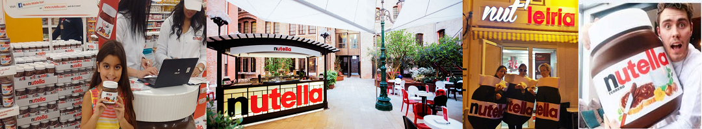

2.3 Promotion:
Nutella will spend a hefty amount each year (close to 0.5 million dollars) to create and keep up brand awareness as well as a loyal customer base. Main idea is to always play on the point of their difference against their competitors i.e. its unique taste and promotional strategies are accordingly designed. We will adopt aggressive campaigning and promotional methods to reach out to as many consumers as possible and convince them about its quality, taste, and design. The common channels of promotion will include radio, television, and newspapers. This completes the Nutella marketing mix.
The strategies will work together to inform customers of new products, to encourage an image of community involvement, and to limit environmental impact. Marketing efforts will be focused on the target market. Coupons will stimulate sales of Nutella and promote early trial of our new products.Nutella advertisements will feature images of family, filled with a bunch of excited children joyfully eating their Nutella-filled breakfast.These images will give consumers the idea that Nutella is a family-friendly product, and consumption of Nutella will bring joy to the entire family.Especially considering positive-friendly imagery which will further emphasizes how Nutella is essential to the family breakfast experience.Before Will sign three-year sponsorship of the Italian national football team.This will recognition throughout the world, as people will link Nutella with Italian national sentiment.

Fig4:My mind says Victoria Secret's Model But my heart says Nutella
2.4 Place: Distribution Strategy will follow intensive distribution.
Nutella will do Canadian road trip with its branded food truck visiting four cities.Will surprise commuters in Toronto and Montreal with an impromptu Nutella breakfast which will be prepared by Faita.Nutella spread will be found in supermarkets and will focus on goal to place it in many locations to make them readily available for customers to provide maximum brand exposure and consumer convenience.will began focusing on branding purely on becoming a breakfast staple – something put on toast, waffles and bagels,helping consumers understand the product’s best use.We will offer positive motivators such as premiums, cooperative advertising allowances, and display allowances to our intermediaries.Also will periodically check the channel member’s performance against standards such as sales quota and company promotion and training programs.Distribution Strategy for the manufacturer. Thus, we will be able to fill orders faster and more conveniently helping market to quickly grasp the concept.